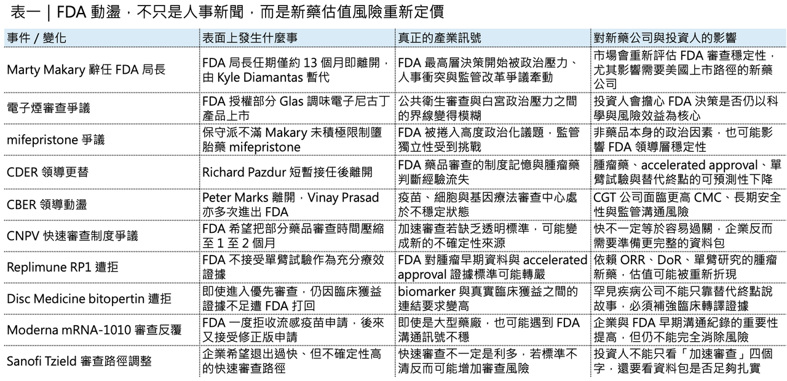
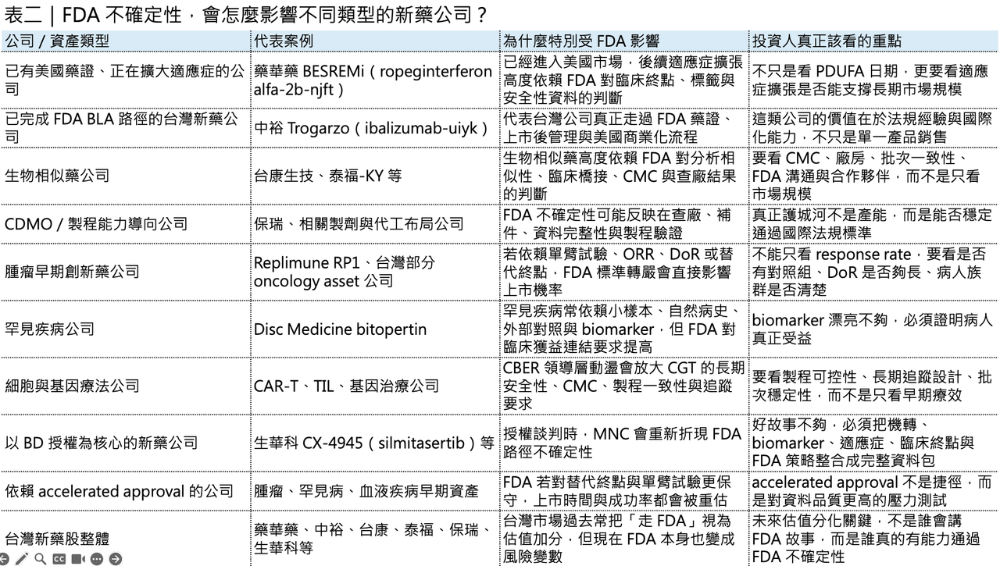

【FDA局長下台：當全球新藥最重要的裁判，也開始變得不穩定】
⚠️ 美國 FDA 又變天了。

2026 年 5 月 12 日，美國 FDA 局長 Marty Makary 正式辭職，結束他僅約 13 個月的任期。川普政府隨後由負責食品事務的副局長 Kyle Diamantas 暫代 FDA 局長；而在此之前，Reuters、Politico、Washington Post、STAT 等媒體已經連續報導，白宮內部正討論撤換 Makary。換句話說，這不是單純的人事傳聞，而是一場已經落地的監管政治事件。
⚠️ 但這件事真正值得關注的，不只是 Marty Makary 個人的去留。
真正重要的是：FDA 這個全球新藥產業最核心的監管錨點，正在進入一個更政治化、更高波動、更難預測的時期。
對生技製藥產業來說，這比「換一位局長」嚴重得多。因為 FDA 不是一般行政機關，它是全球新藥價值鏈裡最重要的定價器、門檻制定者與風險裁判。全球絕大多數創新藥資產，不管來自美國、歐洲、日本、韓國，甚至台灣，最後只要想進入國際資本市場、想做授權、想被大型藥廠收購，都繞不開一個問題：這個資產，有沒有清楚的 FDA 路徑？
過去很多公司說「我們要走 FDA」，市場會把它視為加分項。因為 FDA 代表全球最高標準，也代表商業化上限。但現在問題變成：如果 FDA 本身的審查邏輯、組織穩定性與決策獨立性開始被市場懷疑，那麼「走 FDA」就不只是故事，而是壓力測試。這會直接影響新藥公司的 rNPV、融資節奏、授權談判、臨床設計、上市時程，甚至公司能不能撐到下一個里程碑。

01｜Marty Makary 為什麼會走到下台？
🧩 Marty Makary 本身不是傳統 FDA 官僚出身。
他是 Johns Hopkins 外科醫師、公共政策評論者，長期關注醫療成本、醫療效率、醫療過度使用，以及美國醫療體系裡的浪費問題。他在 2025 年出任 FDA 局長時，外界一度期待他會推動 FDA 現代化，讓藥品、醫材、疫苗、細胞與基因治療的審查更有效率。
這個方向本身並不難理解。
美國新藥開發成本越來越高，臨床試驗越來越昂貴，罕見疾病病人數少、對照組難設計，細胞與基因療法又常常面臨 CMC、長期安全性、真實世界追蹤等複雜問題。產業當然希望 FDA 更快、更彈性、更務實。
所以 Makary 上任初期的改革口號，對許多藥廠與投資人來說，其實是有吸引力的。
例如縮短審查時間、簡化臨床試驗要求、推動 Commissioner’s National Priority Voucher（CNPV）制度、加速高臨床價值創新藥進入市場、減少行政摩擦，這些聽起來都符合產業期待。FDA 官方也曾表示，CNPV 可以把部分藥品與生物製劑的審查時間，從傳統約 10 到 12 個月，壓縮到約 1 到 2 個月。
問題在於，監管改革最難的從來不是提出口號。最難的是：把改革變成可執行、可預期、可被審查團隊一致採用的正式規則。
如果局長說要加速，但審查員不知道標準怎麼變；如果 FDA 說願意彈性，但企業不知道什麼資料才算足夠；如果某些案子被快速放行，另一些案子卻突然被嚴格要求補資料，那產業看到的就不是效率，而是不可預測。
⚠️ 這正是 Makary 任內最大的矛盾。
🧩 一方面，他代表的是「改革 FDA、提高效率、打破官僚」的政治敘事。
🧩 另一方面，藥物審查本身又必須高度穩定、謹慎、可追溯、可複製。
FDA 可以嚴格，藥廠並不怕嚴格。嚴格但一致，企業可以準備。真正可怕的是不一致。因為不一致會讓企業不知道該相信哪一次會議紀錄、不知道該相信哪一份 guidance、不知道該用哪個歷史案例作為臨床設計依據。對新藥公司來說，這種不確定性就是資本市場最討厭的東西。

02｜電子煙只是導火線，真正問題是政治壓力進入 FDA
🚬 Makary 下台最直接的導火線，被認為與電子煙有關。
2026 年 5 月 5 日，FDA 授權 Glas 的 4 款電子尼古丁產品上市。這次授權之所以敏感，是因為其中包含 FDA 首度授權的非菸草、非薄荷口味 ENDS 產品，也就是電子尼古丁傳輸系統。FDA 官方公告指出，這次授權產品包含 Classic Menthol、Fresh Menthol、Gold 與 Sapphire，尼古丁濃度為 50 mg/mL，也就是 5%。
這件事表面看起來和藥品審查無關。
但它暴露了 FDA 目前最核心的問題：科學審查與政治壓力之間的界線，正在變得越來越模糊。
Reuters 與其他美國媒體指出，Makary 與川普政府在調味電子煙審查速度上發生衝突。川普先前在政治上承諾支持部分調味電子煙恢復銷售，而 Makary 對這類產品是否會吸引青少年使用抱持疑慮。最後 FDA 雖然授權部分 Glas 產品，但這場爭議已經讓白宮對 Makary 的耐心快速下降。
電子煙只是其中一個戰場。
另一個更敏感的議題，是 mifepristone。
mifepristone 是美國墮胎藥爭議的核心之一。保守派與反墮胎團體不滿 Makary 沒有更積極推動對 mifepristone 的安全性審查，也沒有更強硬限制其取得通路。這讓他在川普政治聯盟內部失分。Reuters 報導也指出，Makary 的離任與 abortion-pill review、flavored vapes、藥品審查爭議，以及內部人事衝突都有關。
也就是說，Makary 不是因為單一事件下台。
🚬 他是同時被多個方向拉扯到失去支撐。
🚬 保守派嫌他對 mifepristone 不夠強硬。
🚬 公共衛生團體擔心 FDA 被白宮與政治利益牽著走。
🚬 藥廠抱怨審查標準不穩定。
🚬 FDA 內部專家擔憂科學審查的獨立性被削弱。
這種局面下，一位 FDA 局長其實很難坐得穩。因為他不再只是監管官員，而是被放在科學、產業、政治、輿論與意識形態的交叉火線上。
03｜真正危險的不是換人，而是 FDA 的制度記憶正在流失
🏛️ 如果 FDA 只是正常交接，市場不一定會太緊張。
問題是，現在的 FDA 不是在穩定狀態下換人，而是在一個人事高度動盪、專業人才大量流失的機構裡，再失去一把手。這才是最嚴重的地方。2025 年 4 月，HHS 啟動大規模組織重整與裁員。美國媒體報導，HHS 計畫裁撤約 1 萬名員工，加上自願離職與提前退休，整體人力縮減幅度相當大；FDA、CDC、NIH 等公共衛生機構都受到影響。FDA 最珍貴的資產不是網站上的 guidance，也不是某一棟辦公室，而是審查員與資深主管長年累積的判斷力。
藥品審查不是一份 SOP 自動跑完。它高度依賴審查團隊對疾病自然史、臨床終點、替代終點、風險效益比、歷史案例、CMC 風險、病人需求與法規彈性的綜合理解。
這些東西寫不完，也交接不完。
當資深審查官、中心主任、政策主導者接連離開，流失的不是一個職位，而是整個制度記憶。
這一點在 CDER 與 CBER 特別明顯。CDER，也就是 Center for Drug Evaluation and Research，負責大多數藥物審查，包括新藥、仿製藥、部分非處方藥，以及上市後安全監測、標籤更新、產品召回等關鍵職能。過去 CDER 是 FDA 最具制度穩定性的核心部門之一，但 Makary 任內卻頻繁更換領導層。
🏛️ Richard Pazdur 的短暫接任與快速離開，就是一個象徵性事件。
Pazdur 不是普通官員。他是 FDA 腫瘤藥審查體系裡最具代表性的靈魂人物之一。過去二十多年，美國癌症藥物審查從傳統終點走向 accelerated approval、breakthrough therapy、適應症快速拓展，以及與真實世界資料銜接，Pazdur 都是核心推手之一。STAT、Politico 等報導指出，Pazdur 在短暫接任 CDER 主任後即計畫退休或離開，與他對政治干預、部門自主性、以及 CNPV 制度的疑慮有關。
🏛️ 這種人離開，對產業的影響不是抽象的。
因為 Pazdur 代表的是 FDA 對腫瘤藥審查的歷史判斷：什麼情況可以接受單臂試驗？什麼情況可以用 ORR 或 DoR 支撐 accelerated approval？什麼樣的外部對照或自然病史資料有說服力？什麼樣的臨床情境可以提高風險容忍度？這些不是單純翻法規就能解決的問題。
🏛️ CBER 的動盪同樣嚴重。
CBER，也就是 Center for Biologics Evaluation and Research，負責疫苗、血液製品、細胞與基因療法等高度複雜產品。Peter Marks 曾長期領導 CBER，也是美國疫苗與細胞基因治療審查的重要人物。但他在 2025 年 3 月離開 FDA，並在辭職信中嚴厲批評政治因素正在侵蝕科學判斷。
Marks 的離開，對細胞與基因治療產業尤其敏感。因為 CGT 的審查本來就比一般小分子藥物更複雜。它牽涉長期安全性、插入突變風險、免疫反應、CMC 一致性、批次間變異、製程可放大性、持久性資料，以及上市後追蹤。這類產品最需要一個有經驗、有制度記憶、願意與產業溝通的監管團隊。但 CBER 之後又經歷 Vinay Prasad 的爭議任期與第二次離開。2026 年 4 月底，Prasad 再度離開 FDA，Katherine Szarama 暫代 CBER 主任。
對外界來說，這些人事變化可能只是華府官場新聞，但對藥廠來說，這是非常實際的風險，因為同樣一份資料包，去年可能被接受，今年不一定，同樣一個替代終點，前任審查團隊可能同意，新任主管可能要求更多臨床終點。同樣一個單臂試驗設計，過去在罕見疾病或高度未滿足需求領域可能有彈性，現在可能被認為證據不足。同樣一個風險效益比，某個部門可能願意放行，另一個部門可能要求補做試驗。
這就是監管不確定性的成本，不是多等幾個月而已，而是整個新藥資產的估值模型都會被重算。
04｜幾個案例，正在讓產業重新理解 FDA 風險
FDA 的動盪不是抽象問題，它已經反映在具體案例上。
📌第一個案例是 Moderna 的 mRNA-1010。
2026 年 2 月，FDA 一度拒絕受理 Moderna 的 mRNA-based seasonal influenza vaccine 申請，理由與臨床試驗設計及對照組是否符合最佳標準照護有關。這個決定在疫苗界與投資界引發震動，因為 Moderna 表示先前已與 FDA 溝通過相關設計。幾天後，FDA 又改變立場，接受修正版申請，PDUFA 目標日期訂在 2026 年 8 月 5 日。從監管科學角度看，FDA 要求更好的對照組，不一定錯。但問題是，如果企業原本以為已經和 FDA 對齊，後來卻突然被拒收，再經過 Type A meeting 後又被接受，那市場會看到什麼？
🧩市場看到的不是「FDA 很嚴格」。
🧩市場看到的是「FDA 訊號不穩定」。
📌第二個案例是 Replimune 的 RP1，也就是 vusolimogene oderparepvec。
Replimune 申請 RP1 合併 nivolumab 用於 advanced melanoma，但 FDA 發出 complete response letter（CRL）。Makary 隨後公開為 FDA 決策辯護，指出該公司主要依賴單臂試驗，缺乏足夠對照，無法充分證明療效。FDA 對外文件也提到，相關試驗未能清楚分離 RP1 對觀察到反應率的貢獻。從嚴格審查角度看，FDA 的立場有其邏輯。但從產業角度看，問題在於：過去 oncology accelerated approval 的發展史裡，單臂試驗、ORR、DoR、外部對照，在特定情境下確實有機會支撐上市。現在如果 FDA 對這類證據變得更保守，所有依賴早期腫瘤資料做 BD 的公司，都必須重新思考資料包厚度。
📌第三個案例是 Disc Medicine 的 bitopertin。
bitopertin 原本被納入 CNPV 這種超快速審查路徑，但 2026 年 2 月仍遭 FDA 拒絕。Reuters 報導指出，bitopertin 是用於罕見遺傳疾病 erythropoietic protoporphyria（EPP）的藥物，且原本在 FDA national priority voucher program 下審查；該制度目標是把審查時間從一般約 10 到 12 個月縮短至 1 到 2 個月。這個案例對罕見疾病公司打擊很大。因為它傳遞了一個訊息：即使進入加速審查路徑，也不等於 FDA 會接受較薄的臨床證據。如果 biomarker 與病人臨床獲益之間的連結不夠扎實，FDA 仍然可能打回票。
📌第四個案例是 Sanofi 的 Tzield，也就是 teplizumab。
Sanofi 近期被報導希望將 Tzield 從 CNPV 快速審查計畫中移出，原因涉及 FDA 內部對其風險效益比的疑慮。這件事很值得玩味，因為照理說，快速審查是企業希望爭取的優勢；但如果快速審查意味著在高度不確定、極短時間內被重新檢視風險效益，企業反而可能寧願回到較傳統、較可預期的審查節奏。
這四個案例合起來看，產業真正擔心的不是 FDA 變嚴。產業擔心的是：FDA 到底想變嚴，還是想變快？想變快，是不是同時又會在某些案子上突然變嚴？想變嚴，是不是會有清楚標準？想變彈性，是不是只有部分符合政治敘事的產品能受惠？這就是目前 FDA 最大的問題。
它不是單一決策的問題，而是整體訊號系統失真。
05｜為什麼這會影響全球生技估值？
📉 FDA 是全球生技產業最重要的價值錨點。
一個新藥資產在 Phase II 之後能不能被大型藥廠用高價買走，很大程度取決於它是否具備清楚的 FDA 路徑。BD 談判時，買方一定會問幾個問題，
📌FDA 是否接受這個臨床終點？ 📌是否需要第二個 pivotal trial？ 📌能不能走 accelerated approval？📌替代終點是否足夠？ 📌單臂試驗能不能成立？ 📌自然病史資料是否可靠？ 📌安全性資料庫夠不夠大？📌CMC 會不會卡住？📌先前與 FDA 的溝通紀錄是否一致？
如果 FDA 高層動盪、審查標準不穩、中心主任頻繁更換，買方就會提高折現率，這對 biotech 估值非常傷。同樣一條管線，如果 FDA 路徑清楚，MNC 願意給更高 upfront。因為買方知道這個資產大概需要什麼試驗、多少病人、多久時間、多少成本、上市機率大約如何。但如果 FDA 路徑模糊，MNC 就會把更多價值放進 milestone。如果風險再高一點，買方甚至會選擇等下一個資料讀出，不急著交易。所以 FDA 人事震盪表面是監管新聞，實際上是 BD 定價新聞。
這對四類公司影響特別大：
📌 第一，是罕見疾病公司。
罕見疾病常常需要依賴小樣本、自然病史、替代終點、外部對照、單臂試驗，或是 biomarker 與功能性終點之間的轉譯連結。如果 FDA 對這些證據變得更保守，罕見疾病公司的臨床設計彈性就會下降，開發成本也會上升。
📌第二，是細胞與基因療法公司。
CGT 的審查核心不只是療效，還包括 CMC、長期安全性、批次一致性、製程可控性、免疫原性、持久性，以及上市後追蹤。CBER 領導層若不穩，產業會非常不安。因為這些產品本來就需要大量前期溝通，一旦審查團隊換人，原本建立的共識可能被重新檢視。
📌第三，是腫瘤早期資產。
如果一個腫瘤資產要靠 ORR、DoR、ctDNA、MRD、單臂資料或小型外部對照來爭取 accelerated approval，FDA 對證據標準的任何轉向，都會直接影響上市機率。
📌第四，是替代終點驅動的代謝、神經、血液與免疫疾病資產。
當 FDA 對 biomarker 與臨床獲益之間的連結要求更高，企業就不能只拿漂亮的 biomarker data 說故事，而必須準備更完整的臨床轉譯邏輯。
這意味著未來新藥公司要做 BD，不能只準備 topline data，還要準備一個真正能經得起 FDA 變動環境檢驗的 FDA-proof package。
06｜Kyle Diamantas 接手，也不代表問題會自動解決
⚖️ Makary 辭職後，Kyle Diamantas 暫代 FDA 局長。
Diamantas 是 FDA 食品事務副局長，背景偏法律與監管合規，而不是醫學或藥物審查。Reuters 報導也提到，他是一位沒有醫學或科學訓練背景的律師型官員。這意味著他更可能是過渡時期的看守者，而不是長期帶領 FDA 重建藥品審查體系的最終人選。白宮正在尋找正式接任人選，媒體提到的人名包括前 FDA 局長 Stephen Hahn、前代理 FDA 局長 Brett Giroir 等。這些人相對傳統，具備醫學與公共衛生管理經驗。但問題是，不管誰接手，都不是簡單局面。
下一任 FDA 領導人至少要面對三個難題。
⚖️ 第一，重建科學審查的防火牆。
FDA 必須讓產業相信，藥物審查仍然基於資料、疾病風險效益與法規標準，而不是白宮、政治團體、媒體輿論或特定產業遊說的即時壓力。
⚖️ 第二，止住人才流失。
FDA 最珍貴的資產不是局長，而是中高階審查員與資深主管。這些人一旦離開，很難快速補回。更麻煩的是，即使新人補上，也需要很多年才能建立疾病領域判斷與審查默契。
⚖️ 第三，給產業清楚訊號。
如果 FDA 要提高審查標準，就應該明確說清楚。如果 FDA 要接受更多彈性終點，也應該形成可操作的 guidance。如果 FDA 要改革 accelerated approval，也應該明確界定哪些情境可以、哪些不可以。
產業可以接受監管變嚴，但不能接受每一個專案都像抽籤。
【結語｜FDA 的不確定性，正在變成全球新藥產業的新風險溢價】
Marty Makary 下台，表面上是一場華府人事震盪。但放到全球新藥產業來看，這其實是一個更深層的訊號：
🧭 FDA 正在從過去那個相對穩定、專業、可預測的全球監管標竿，變成一個被政治壓力、組織動盪、人才流失與政策搖擺共同牽動的複雜系統。
🧭 對製藥巨頭來說，這意味著審查時間、上市策略與全球註冊布局要重新估算。
🧭 對 biotech 來說，這意味著資金 runway、臨床設計、BD 時點與授權估值都要重新折現。
🧭 對台灣新藥公司來說，這意味著「走 FDA」不再只是資本市場故事的加分項，而是必須用完整資料包證明自己能穿越不確定監管環境的硬實力。
未來投資新藥公司，不能只看題材夠不夠大，也不能只看臨床資料有沒有亮點。更要看這家公司有沒有能力把科學證據、臨床設計、法規策略、CMC、資金規劃與 BD 故事整合成一套能被 FDA、MNC 與資本市場同時理解的語言。
FDA 局長去留，只是表層事件。
真正的風暴是：當全球創新藥最重要的裁判也開始變得不穩定時，新藥研發的風險該怎麼重新定價？
這會是未來幾年全球 biotech 市場最重要的問題之一。
參考資料：
[0]:各公司官網＆公開資料
[1]:
reuters.com
https://www.reuters.com/business/healthcare-pharmaceuticals/fda-commissioner-makary-is-resigning-politico-reports-2026-05-12/
www.reuters.com
[2]:
Commissioner's National Priority Voucher (CNPV) Pilot Program | FDA
FDA Commissioner's National Priority Voucher Program. The Commissioner's National Priority Voucher Program offers an unprecedented opportunity to reduce drug and biologic review times from 10-12 months to just 1-2 months.
www.fda.gov
[3]:
FDA Expands Market Access, Authorizes New ENDS Products | FDA
FDA today authorized the marketing of four Glas electronic nicotine delivery systems (ENDS) through the premarket tobacco product application (PMTA) pathway.
www.fda.gov
[4]:
Department of Health and Human Services will lay off 10,000 workers | AP News
In a major overhaul, the U.S. Department of Health and Human Services will lay off 10,000 workers and shut down entire agencies.
apnews.com
[5]:
Top drug regulator Richard Pazdur set to leave the FDA | STAT
Top drug regulator Richard Pazdur filed papers to retire from the Food and Drug Administration at the end of this month.
www.statnews.com
[6]:
www.accessdata.fda.gov
https://www.accessdata.fda.gov/drugsatfda_docs/label/2018/761065lbl.pdf
www.accessdata.fda.gov